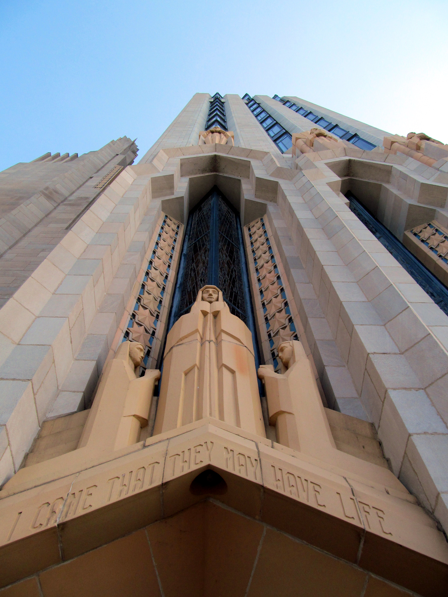

AFFIRMING CHURCHES INTULSAYES, THEY EXISTHERE'S WHERE TO FIND YOURS
A faith community that welcomes all of you is not a fantasy in this city. It has an address.
June 10, 2026
◇
Tulsa Gays
🕒 7 min read·Published June 10, 2026·✓ Addresses verified June 2026
Boston Avenue United Methodist Church (1929), one of the great Art Deco buildings in America, and a congregation Oklahomans for Equality lists as welcoming. Photo: National Register of Historic Places nomination / Public Domain (Wikimedia Commons)
Let me say the thing you have been waiting for someone to say out loud. You can be gay, and trans, and partnered, and entirely yourself, and walk into a church in this city on a Sunday morning, and not one soul will flinch. I know that runs against everything you were handed growing up in Oklahoma. I know the word "church" may land in your chest like a closed door. But I am telling you, with my whole heart and a verified list to back it up, that the door is open, and it has been open for longer than you think.
Plenty of queer Tulsans grew up in a pew and then spent their twenties getting as far away from one as humanly possible, and darling, I understand the impulse completely. When a place tells you that the very center of who you are is a problem to be fixed, leaving is not weakness. It is wisdom. But some of you still miss it. You miss the singing, the standing-up-together, the casserole when someone is sick, the feeling of belonging to something older than your own loneliness. If that is you, this guide is for you, and I want you to read it without bracing.
"An affirming church does not merely tolerate you in the back row. It puts you in the choir, on the board, behind the pulpit, and in the wedding it is honored to perform."
A quick translation, because the language matters. When a congregation calls itself "Open and Affirming," "Reconciling," "More Light," or "Welcoming," those are not vague feelings. They are formal, voted-on commitments within specific denominations, which means the welcome is written into the institution rather than depending on whichever person happens to greet you at the door. Tulsa has dozens of these communities. Here are the ones I would send a nervous first-timer to without a second thought.
The Congregations
United Church of Christ · Open & Affirming since 1995
If you want the gold standard, start here. Fellowship Congregational adopted its Open and Affirming statement in 1995, back when that took real courage in this state, and it has never looked back. LGBTQ people are woven into the life of the church at every level, not displayed as a token. The United Church of Christ has been a national leader on queer inclusion for decades, and this congregation is the Tulsa proof of it.
📍 2900 S Harvard Ave · (918) 747-7777 · ucctulsa.orgBest first visit: a regular Sunday morning service. Sit wherever you like. Nobody is going to ask you to explain yourself.
Unitarian Universalist · Largest UU congregation in the country
All Souls is enormous, joyful, and unapologetically progressive, and it happens to be the largest Unitarian Universalist congregation in the United States. Their motto is "Love Beyond Belief," which tells you precisely how much they care about who you love. If you want a faith community that asks nothing of your certainty and everything of your kindness, this is your room. Founded in 1921, on Peoria in the heart of midtown.
📍 2952 S Peoria Ave · allsoulschurch.orgBest first visit: they offer more than one Sunday service and a livestream, so you can ease in from your couch before you ever park the car.
Progressive theology, traditional worship, and an openly inclusive congregation sitting directly across the street from the University of Tulsa. College Hill is part of the More Light Presbyterian network, the wing of the PCUSA that fought for queer ordination and won. If you grew up Presbyterian and assumed that door had closed on you, it did not. It is right here, with the organ and the hymnals and all.
📍 712 S Columbia Ave · (918) 592-5800 · collegehilltulsa.orgBest first visit: a good fit if you are a TU student or live in the Kendall-Whittier and University neighborhoods. Walkable, and used to new faces.
St. Dunstan's does not just say the welcoming words, it puts on comfortable shoes and marches in the Pride parade every June. The Episcopal Church ordains openly gay clergy and blesses same-sex marriages, and this south Tulsa parish lives all of it. LGBTQIA folks serve at every level here. If you crave a little incense, candlelight, and centuries-old liturgy with a community that actually means the part about loving your neighbor, St. Dunstan's is glorious.
📍 5635 E 71st St · (918) 492-7140 · Sunday Holy Communion 10amBest first visit: the 10am Sunday Holy Communion. Episcopal services follow a printed order of worship, so you can simply follow along, and nobody expects you to have it memorized.
Even if you never sang a hymn in your life, you have admired this building. Boston Avenue is one of the most celebrated Art Deco churches in the country, a soaring 1929 masterpiece downtown, and Oklahomans for Equality lists it among the city's welcoming faith communities. Go for the architecture if that is what gets you through the door. Stay because the people inside it chose to make room for you.
📍 1301 S Boston Ave · bostonavenue.orgBest first visit: take the building tour first if you are church-shy. It lets you experience the space as a visitor before you ever commit to a service.
A downtown Episcopal parish that officiates same-sex weddings and welcomes queer worshippers without footnotes or fine print. If St. Dunstan's is across town from you, Trinity gives you the same affirming Episcopal home closer to the center of the city. Beautiful, historic, and genuinely glad you came.
📍 501 S Cincinnati Ave · trinitytulsa.orgBest first visit: a weekday is a lovely low-pressure way to see the sanctuary before you decide on a Sunday.

The terra-cotta tower at Boston Avenue. Faith and beauty are not opposites. Photo: Sarah J Malerich / CC BY-SA 3.0 (Wikimedia Commons)
Beyond the Christian Aisle
Affirming faith in Tulsa is not only a Christian story, and I would be doing you a disservice to pretend otherwise. If your roots are Jewish, or you are simply seeking, the city has welcoming houses of worship for you too. Temple Israel (2004 E 22nd Pl) is Tulsa's Reform Jewish congregation and performs same-sex weddings. Congregation B'nai Emunah, known around town simply as "the Synagogue" (1719 S Owasso Ave), is a warm Conservative community that also affirms and marries queer couples. For a softer, more contemplative landing, Hope Unitarian Church (8432 S Sheridan Ave) offers a second Unitarian Universalist home in south Tulsa.
How to Walk In Without Panicking
Here is my honest counsel, from one tender heart to another. You do not owe any congregation your whole story on the first morning. Go once. Sit near the back if that is where your nerves want you. Leave at the final hymn if you need to, and let nobody guilt you about it. An affirming church earns your trust over weeks, not in a single handshake, and the good ones know that perfectly well. They have welcomed scores of people who arrived exactly as wary as you are right now.
And if you would rather verify the welcome yourself before trusting a stranger on the internet, you absolutely should. Oklahomans for Equality maintains a full Faith directory of affirming congregations across the Tulsa area, the same list I drew this guide from. Every address here was checked against it in June 2026. If a church you are curious about is not on that list, that silence is information, and you are allowed to ask the hard questions before you ever sit down.
"The God you were taught to fear and the community you were taught to flee were never the only options. Some rooms in this city have been holding a seat for you the entire time."
You spent enough years believing faith and pride could not share a Sunday. Tulsa has quietly proven otherwise, building by building, vote by vote, casserole by casserole. Whether you walk back into a sanctuary or never do is entirely your call to make, and I will adore you either way. But if some small part of you has been aching for it, now you know precisely where to go and exactly what you will find. Go see for yourself.